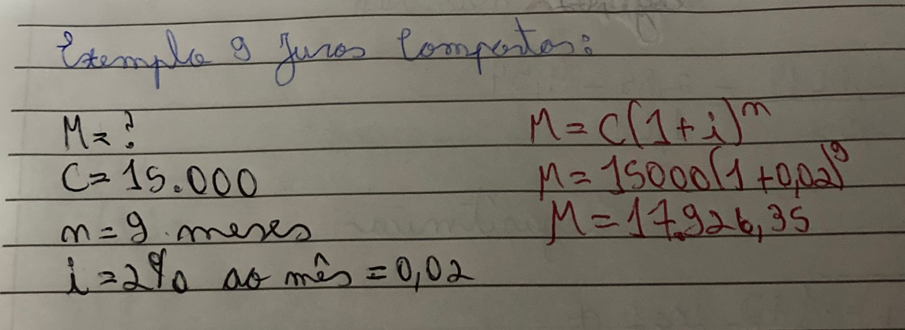

Matemática Financeira - Juros Compostos
Anne e outras meninas dançando ao redor da fogueira.
"Emoções raramente são convenientes e muitas vezes intoleráveis." - Anne Shirley Cuthbert
O que é Matemática Financeira?
É a matemática que visa explicar a economia e as finanças.
Anne, Marilla e Matthew indo para um piquinique.
"É muito bom ler histórias tristes e se imaginar passando por elas heroicamente, mas.. não é fácil se está
triste, não?" - Anne Shirley Cuthbert
O que é Juros Compostos?
É uma taxa aplicada ao capital inicial de forma exponencial por um período de tempo, a taxa seguinte inside ao valor montante.
Conceitos:
- Capital Inicial(C): É o valor no qual será aplicados os juros;
- Prazo(n): É o período de tempo no qual está em uso o dinheiro do capital inicial;
- Juro(J): É o preço pago pelo empréstimo;
- Taxa de Juros(i): É o juro pago durante um período de tempo;
- Montante(M): É o valor total a ser pago no final;
- Fórmula: M=C+J e M=C(1+i)n
Exemplo: Qual o montante de uma aplicação à juros compostos de R$
15.000,00, pelo prazo de 9 meses, à taxa de 2% ao mês.

cottage